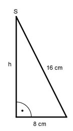

Aufgabe 243 Welches Volumen V hat ein Kegel, der aus einem halbkreisförmigen Blech mit einem Radius von 16 cm gebogen wird? Der Umfang des Halbkreises entspricht dem Umfang des Kegelgrundkreises. 2 * л * r UHalbkreis = ----------- = л * 16 cm = 50,24 cm 2 UKegel = 2 * л * rKegel 50,24 cm = 2 * л * rKegel |:2*л 50,24 cm rKegel = ------------ = 8 cm 2 * л

Satz von Pythagoras zur Berechnung der Kegelhöhe h: 162 cm2 = h2 + 82 cm2 | -82 cm2 h2 = 162 cm2 - 82 cm2 = 192 cm2 |√ h = 13,86 cm л * rKegel2 * h л * 82 cm * 13,86 cm V = ----------------- = ------------------------ = 3 3 = 928,4 cm3